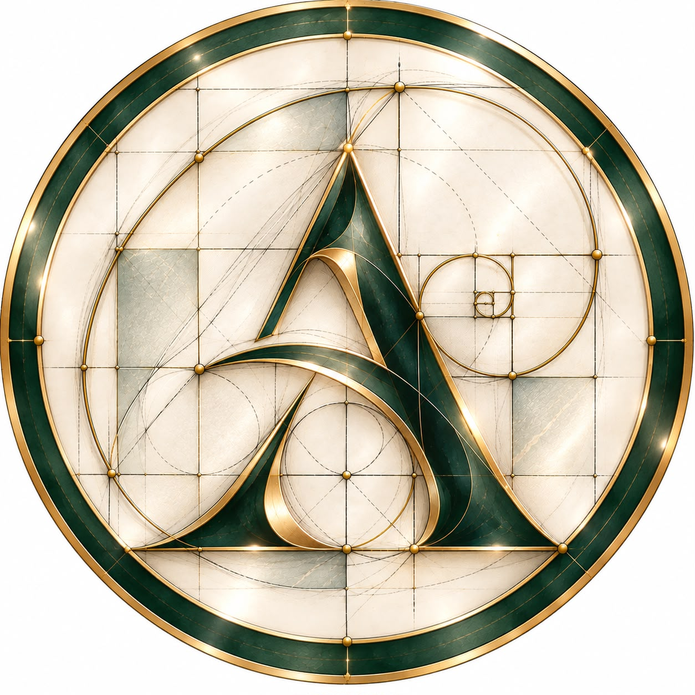

MVP EM VALIDAÇÃO
Organização da operação
Clientes, processos, documentos, agenda, financeiro e equipe reunidos na rotina do escritório.

JUSCLAREZA PARA CADA ESCOLHA
Clientes, processos, agenda e equipe.
Uma rotina conectada, com você no controle.
MVP em validação · Demonstração com dados fictícios
Arraste para mudar de perspectiva.
Um mesmo objeto. Novos pontos de vista.Preparando a perspectiva 3D…
NOSSA VISÃO / SUA ROTINA
A Azyra Jus nasce da rotina real de um escritório. Reúne informações, conecta a equipe e organiza o trabalho para que cada decisão tenha contexto.
Cada etapa é desenvolvida, testada e revisada com quem utiliza a plataforma. A tecnologia acompanha a prática jurídica, mantendo o profissional no controle.
A PLATAFORMA / EM PRIMEIRA PESSOA
Explore uma demonstração da organização do escritório. Cada módulo, uma parte da sua rotina. Tudo com contexto.
SEU ESCRITÓRIO, EM PERSPECTIVA
Dados fictícios e contextos separados apenas nesta demonstração. Sem conexão com a plataforma real.
Vídeo demonstrativo da plataforma.
RECURSOS / CADA PARTE CONECTADA
Explore cada recurso para conhecer a proposta. ← Deslize para descobrir →
PRECISÃO / IDENTIDADE / PROPÓSITO
O que organiza a rotina também orienta as decisões. Uma plataforma construída para reunir contexto, aproximar a equipe e manter o profissional no controle.
Explore cada parteTRABALHO COMPARTILHADO / ACESSO INDIVIDUAL
O escritório é o ponto de encontro das informações. Cada pessoa participa com seu próprio acesso e com permissões adequadas à sua função.
O PRÓXIMO CAPÍTULO
Uma evolução por etapas, orientada pela rotina de quem utiliza a plataforma.
Clientes, processos, documentos, agenda, financeiro e equipe reunidos na rotina do escritório.
Mensagens de texto validadas com a API oficial do WhatsApp em número de teste. Número real e produção em preparação.
Apoio à organização e ao acompanhamento, com supervisão humana e o profissional no controle.
PERGUNTAS FREQUENTES
A Azyra Jus está em fase MVP e validação piloto. Este site apresenta uma demonstração visual. A abertura para novos escritórios será definida após os testes.
Sim. O projeto utiliza contas individuais e permissões por função para compartilhar o trabalho dentro do escritório.
O envio e o recebimento de mensagens de texto foram validados com um número de teste da API oficial da Meta. A conexão do número real e a infraestrutura de produção estão em preparação.
Não. Todos os nomes, valores e exemplos desta página são fictícios. A prévia não está conectada ao banco de dados do escritório.
GESTÃO COM PROPÓSITO